← 返回阅读库 · 原论文目录
论文讲解阅读文档 · 新模型 · v053
DAT Vision Transformer with Deformable Attention[2201.00520]
视频时长 00:06:59；讲解文字 3,418 字符；提取讲解画面 25 张。按视频原顺序阅读，每段文字保留时间戳。
文字来自整段视频的自动语音转写，按自然停顿分段，并与 PPT / 论文页面 / 演示画面对齐。未将讲解压缩为摘要；术语、数字和口述公式请结合画面及原论文核对。 阅读稿已校正规范部分明确术语误识别；原始逐字稿和每处修改记录另行保留。
讲解画面为源视频截图（640×360），不是可编辑 PPT 文件。全片按每秒 2 帧扫描内容变化，逐步展开页保留；连续动画保留代表画面。清晰度受源视频限制。
下载完整资料包 · 含离线 HTML、PDF、Word、全部 PPT 画面和字幕。
原论文与材料
Vision Transformer with Deformable Attention · 下载完整 PDF（12 页）
按时间阅读
00:00:00–00:00:14 · 画面 001
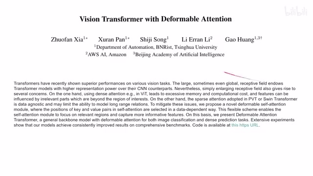
00:00:00–00:00:14 · 画面 001大家好,今天我们来快速说一篇论文 Vision Transformer with Deformable Attention 这篇文章把我们之前介绍的 Deformable Convolution 经过一番改造带入到 Vision Transformer 这个构架里面下面我们具体来看首先,Intuition 为什么我们要做 Deformable Convolution 作者的解释是我们的 Attention 的范围从这个角度来理解对于 VIT 来说,整个图都是这个显示太大了
00:00:14–00:00:28 · 画面 002
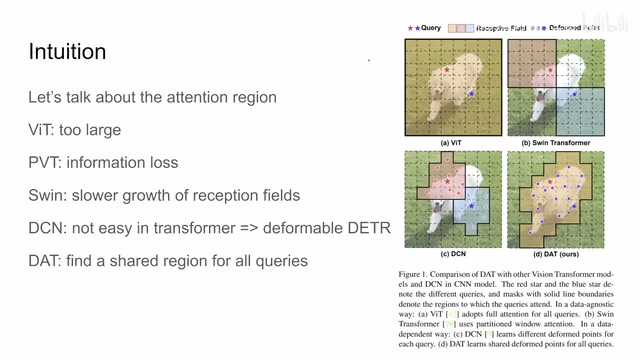
00:00:14–00:00:28 · 画面 00200:00:28–00:00:29 · 画面 003
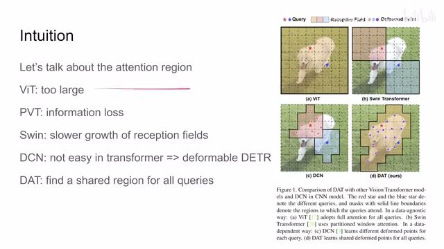
00:00:28–00:00:29 · 画面 003对于 PVT 来说会损失很多的信息也不好，然后这个 Swin 因为它的这种注意力区域是交叠了，这个晃来晃去的这种对吧？所以作者吐槽他说呢，这个感受野的增长呢速度太慢了。然后呢就是我们之前介绍的这个 DCN，它呢不太好直接的用在 Transformer 里面，但是呢还真有人啊改了一个叫做 Deformable DETR，感兴趣的朋友呢也可以去查查这篇文章。那么最后呢就是本文提出的
00:00:29–00:00:43 · 画面 004
00:00:29–00:00:43 · 画面 00400:00:43–00:00:45 · 画面 005
00:00:43–00:00:45 · 画面 00500:00:45–00:00:58 · 画面 006
00:00:45–00:00:58 · 画面 00600:00:58–00:01:22 · 画面 007
00:00:58–00:01:22 · 画面 007这个 dat 那他的思想就是我要限制 attention 产生的范围而这个限制的方法呢不是人为给定我也是通过像 deformable convolution 一样的啊这个 deformable offset 这种形式来给他学习出来一个这个范围那在这个范围内呢我的 query 就跟所有的这些 token 来租我这个 attention 那是这样的一个设计那下面我们具体来看吧那首先一个概览就是我的一张图像进来对吧这一个个都是 token
00:01:22–00:02:59 · 画面 008
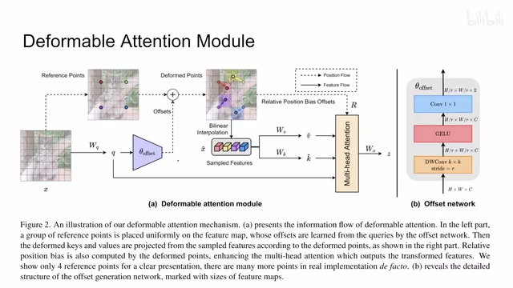
00:01:22–00:02:59 · 画面 008那不变的呢是我们首先用这个 linear layer 把我们的 query 做出来那 query 留着就后面做 attention 就好了这是这一只然后拿到这个 query 同时呢我要用这个 query 来做一个 offset 就是用它来告诉我我的 attention 的范围是什么那具体来说就是原始的一张图像经过 downsample 比如说这里剩下了四个这个 reference point 然后呢根据我的这个 offset 加上之后对我这个 reference point 就移动了嘛
对吧，移动到相应的位置，然后在这个位置我们取他临近的 4 个 token，对吧？临近的 4 个 token，然后经过一番线性插值操作，跟我们之前介绍的 dcn 一样对吧？然后你就把相当于把这 4 个点他的这个 token 给他找出来了，那这些 token 叫做 sampled feature然后把这些插值出来的这些 token 送到我们的 value 的 projection ，key 的 projection，有了 query key value 对吧？大家一起做一个 attention 就好了。然后后面多个头串接起来对吧？再做后续的工作就可以了。同时因为你实际上采这些 token 的位置它不是一个整数，它变化了，所以你的 positional embedding 也要相应的变化
因此在 relative position embedding 的基础上，这里作者叫 positional bias，不过都是一样的。在它的基础上作者也是四个 token 的 positional embedding 对吧？大家来插补一下精确的 deform 的位置的它的 positional embedding，然后再算个 attention 的时候加到里面就可以了。这个就是 deformable attention module
00:02:59–00:03:00 · 画面 009
00:02:59–00:03:00 · 画面 00900:03:00–00:03:43 · 画面 010
00:03:00–00:03:43 · 画面 010那当然呢，这个 offset 具体应该怎么算呢？我们来看到这边对吧？首先输入是 a 乘 w 乘 c，这个是我们的 query 的尺寸。然后这里注意用一个 stride 等于 r，这个 r 就相当于这个 downsample 对吧？那做完之后整个这个尺寸的图就变成了只有 2 乘 2 的这样一个图。然后呢做的是 depthwise convolution，先在 spatial-wise 做一个混合，然后呢激活函数激活完了之后再做一个这个 1 乘 1 的 convolution，那它本质上就是每一个 channel
做这个 mlp 嘛对吧那得到的这个尺寸呢是长这个样子的哎为什么乘以 2 呢因为 offset 有两个坐标一个是横轴的一个是纵轴的啊那这个呢就是这个 offset network 发生在这里的一系列事情那么以上呢就是本文的主要的一个技术脉络那下面我们看一些具体的定义啊比如说首先啊我们的这个 reference point 选择那它本质上呢是进行了均匀的采样我们的 resolution 从原来的 h 和 w 变成了这个 hg 和 wg 啊这样子
00:03:43–00:03:44 · 画面 011
00:03:43–00:03:44 · 画面 01100:03:44–00:03:46 · 画面 012
00:03:44–00:03:46 · 画面 01200:03:46–00:04:42 · 画面 013
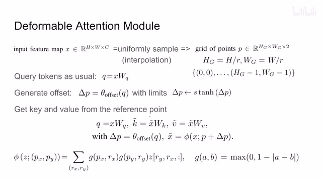
00:03:46–00:04:42 · 画面 013然后 query token 呢一样呢对吧正常就正常做然后算这个 offset那算完这个 offset 的时候呢，我们注意这里他用一个 tanh 首先来限制住这个 offset 的这个值，他不能跑太偏。然后呢用这个 s 来决定这个 offset scale 啊，他到底能够多大一个范围内在晃动。那这样算出来的 offset 呢不至于太过自由。那再往下呢这个 key 和 value，我们之前都说了，他是根据我们算好的移动过的这个 reference point，然后呢他插值差出来这个相应的 token 的 value，然后呢做了这个 attention
至于这边怎么这个插值，跟我们之前的 deformable convolution 是一样的对吧？包括这个距离等等都是一样的。那么这个就是 deformable attention 相应的 offset generation，之前我们也说了也没有什么特别的地方，唯一需要注意的是这里同样的跟 multi-head self-attention 一样，我们也是把这个 offset 一组一组的来做
00:04:42–00:05:23 · 画面 014
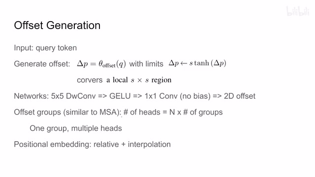
00:04:42–00:05:23 · 画面 014也就是说我一个 vector 进来，我按照不同的 channel 去给它分嘛，分成不同的组嘛，然后呢每个组去做，在这里呢作者维持一个 multi head 的数量是数倍于我们这个分的这个 offset 这个组的它的数量的啊，那这也意味着每一个 offset 组呢它会对应个很多个这个 attention head那当然后面还有这个 positional embedding 对吧也是插值插出来的这个都不新鲜了那以上就是本文的主要的一个技术贡献那下面我们来看整个这个网络的结构还是 Swin 那套结构只不过呢我们把相应的 attention 换成这个本文的这个 deformable attention 就可以了那具体的设计呢我们来看到这里根据这个 evaluation 呢作者发现
00:05:23–00:05:33 · 画面 015
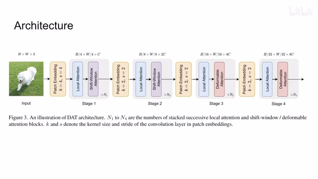
00:05:23–00:05:33 · 画面 01500:05:33–00:06:00 · 画面 016
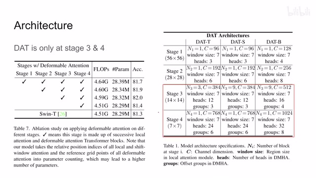
00:05:33–00:06:00 · 画面 016我并不是把所有的 stage 里面的 attention 都换成 deformableattention 效果是最好的实际上只换最后两层它达到的性能是最好的因此在设计中前面的这两集还都是 Swin 它的 attention 被限制在了一个相对较小的范围内后面这几集我们有了 deformableattention 这个是本文的网络设计当然这里作者还汇报了其他 ablation
00:06:00–00:06:07 · 画面 017
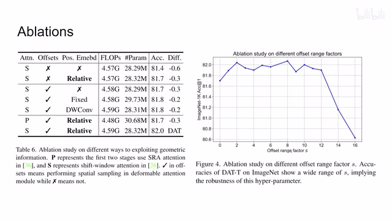
00:06:00–00:06:07 · 画面 017那这里表示的是前面两个 stage 用的是什么 attention 那这个 P 代表的是 SRA 的 attentionS 就是 Swin 的 attention 然后呢本文这个 deformable 的 offset 有没有对 positional embedding 什么样子的等等这一些的 ablation 那还有包括这边这个 offset 的范围就是我的一个位置点它能在多大范围内移动对吧那可以看到 S 等于 8 的时候性能是最好的不过前面这些呢都差不多基本也算在误差之内吧那这是 ablation
00:06:07–00:06:08 · 画面 018
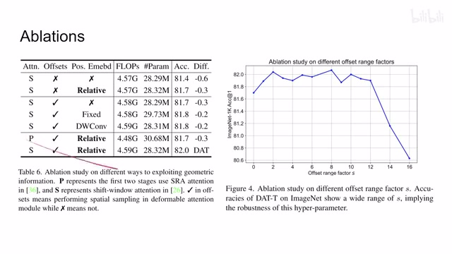
00:06:07–00:06:08 · 画面 01800:06:08–00:06:30 · 画面 019
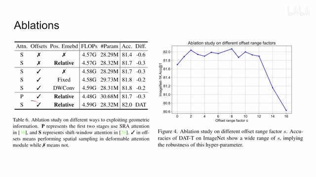
00:06:08–00:06:30 · 画面 01900:06:30–00:06:31 · 画面 020
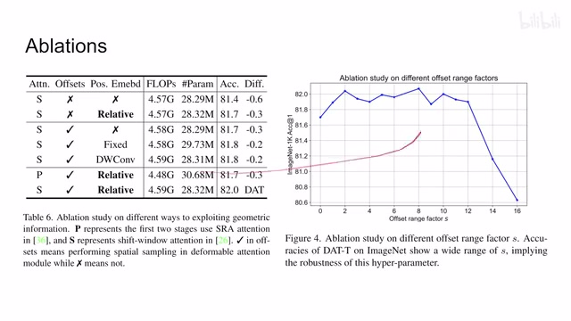
00:06:30–00:06:31 · 画面 02000:06:31–00:06:32 · 画面 021
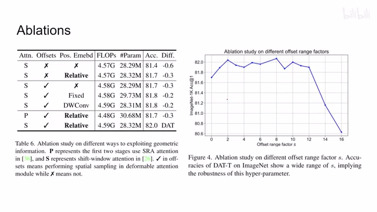
00:06:31–00:06:32 · 画面 021后面作者还汇报了很多实验的结果包括还有他自己的 Visualization 比如说 ImageNet 是 Coco 用了不同的 Backbone 做 Detection 做 Semantic Segmentation 这些东西等等感兴趣的朋友非常推荐你到原文中查看总的来说这篇还是把 Deformable Convolution 改到了 Vision Transformer 里面取得了一个令人满意的结果那么以上就是我对这一个论文的快速的整理那么感谢您的收看再见
00:06:32–00:06:39 · 画面 022
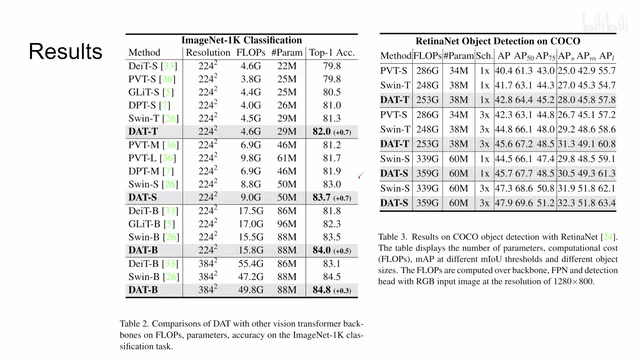
00:06:32–00:06:39 · 画面 02200:06:39–00:06:47 · 画面 023
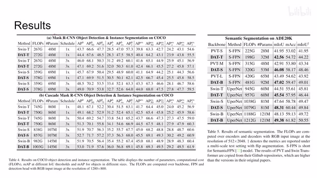
00:06:39–00:06:47 · 画面 02300:06:47–00:06:59 · 画面 024
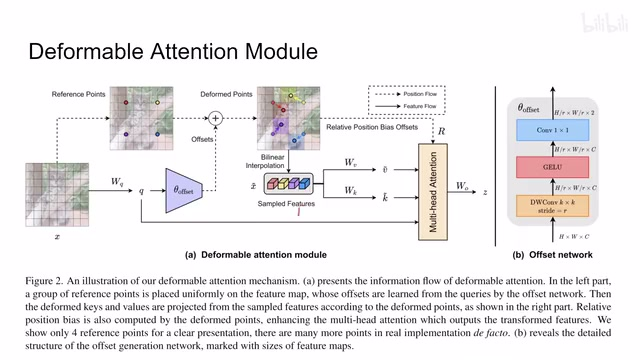
00:06:47–00:06:59 · 画面 02400:06:59–00:06:59 · 画面 025
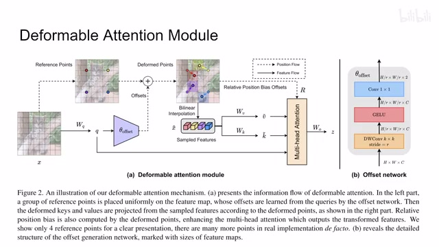
00:06:59–00:06:59 · 画面 025转写与来源说明 · 0 个自动复核提示
保留 17 个原始语音片段，0 个片段触发自动复核提示。提示仅用于定位可能的术语、重复或识别问题，不等于已确认错误。
讲解画面为源视频截图（640×360），不是可编辑 PPT 文件。全片按每秒 2 帧扫描内容变化，逐步展开页保留；连续动画保留代表画面。清晰度受源视频限制。
原视频：paper/合集_2026-10-16_新模型/[论文简析]DAT Vision Transformer with Deformable Attention[2201.00520].mp4
SHA-256：f0b6e4181e1c23a292af81f215da3a92784a8d67c3f2981501814293742a5306
全文按视频语音与画面制作。原论文可从上方链接下载；完整资料包保留全文、原始逐字稿、字幕和校对记录。